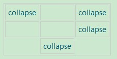
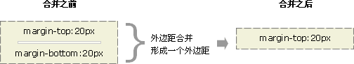

属性选择器
可以为拥有指定属性的 HTML 元素设置样式，而不仅限于 class 和 id 属性。
注释：Internet Explorer 7 （以及更高版本）在规定了 !DOCTYPE 的情况下支持属性选择器。IE6 及更低的版本不支持属性选择器。
下面的例子为带有 title 属性的所有元素设置样式：
[title]{
color:red;
}
属性和值选择器：下面的例子为 title="W3School" 的所有元素设置样式
[title=W3School]{
border:5px solid blue;
}
属性和值选择器 - 多个值：下面的例子为包含指定值的 title 属性的所有元素设置样式。适用于由空格分隔的属性值
[title~=hello] {
color:red;
}
<h1>可以应用样式：</h1>
<h2 title="hello world">Hello world</h2>
<p title="student hello">Hello W3School students!</h1>
<hr />
<h1>无法应用样式：</h1>
<h2 title="world">Hello world</h2>
<p title="student">Hello W3School students!</p>
下面的例子为带有包含指定值的 lang 属性的所有元素设置样式。适用于由连字符分隔的属性值：
[lang|=en] {
color:red;
}
<h1>可以应用样式：</h1>
<p lang="en">Hello!</p>
<p lang="en-us">Hi!</p>
<hr />
<h1>无法应用样式：</h1>
<p lang="us">Hi!</p>
<p lang="zh">Hao!</p>
属性选择器在为不带有 class 或 id 的表单设置样式时特别有用：
input[type="text"] {
width:150px;
display:block;
margin-bottom:10px;
background-color:yellow;
font-family:
Verdana, Arial;
}
input[type="button"] {
width:120px;
margin-left:35px;
display:block;
font-family:
Verdana, Arial;
}
| 选择器 | 描述 |
|---|---|
| [attribute] | 用于选取带有指定属性的元素。 |
| [attribute=value] | 用于选取带有指定属性和值的元素。 |
| [attribute~=value] | 用于选取属性值中包含指定词汇的元素。 |
| [attribute|=value] | 用于选取带有以指定值开头的属性值的元素，该值必须是整个单词。 |
| [attribute^=value] | 匹配属性值以指定值开头的每个元素。 |
| [attribute$=value] | 匹配属性值以指定值结尾的每个元素。 |
| [attribute*=value] | 匹配属性值中包含指定值的每个元素。 |
CSS 背景
background-color 不能继承，其默认值是 transparent。transparent 有“透明”之意。也就是说，如果一个元素没有指定背景色，那么背景就是透明的，这样其祖先元素的背景才能可见。
背景重复
如果需要在页面上对背景图像进行平铺，可以使用background-repeat 属性。
属性值 repeat 导致图像在水平垂直方向上都平铺，就像以往背景图像的通常做法一样。repeat-x 和 repeat-y 分别导致图像只在水平或垂直方向上重复，no-repeat 则不允许图像在任何方向上平铺。
默认地，背景图像将从一个元素的左上角开始。请看下面的例子：
body {
background-image: url(/i/eg_bg_03.gif);
background-repeat: repeat-y;
}
背景定位
可以利用 background-position 属性改变图像在背景中的位置。
下面的例子在 body 元素中将一个背景图像居中放置：
body{
background-image:url('/i/eg_bg_03.gif');
background-repeat:no-repeat;
background-position:center;
}
为 background-position 属性提供值有很多方法。首先，可以使用一些关键字：top、bottom、left、right 和 center。通常，这些关键字会成对出现，不过也不总是这样。还可以使用长度值，如 100px 或 5cm，最后也可以使用百分数值。不同类型的值对于背景图像的放置稍有差异。
图像放置关键字最容易理解，其作用如其名称所表明的。例如，top right 使图像放置在元素内边距区的右上角。
根据规范，位置关键字可以按任何顺序出现，只要保证不超过两个关键字 - 一个对应水平方向，另一个对象垂直方向。
如果只出现一个关键字，则认为另一个关键字是 center。
所以，如果希望每个段落的中部上方出现一个图像，只需声明如下：
p {
background-image:url('bgimg.gif');
background-repeat:no-repeat;
background-position:top;
}
下面是等价的位置关键字：
| 单一关键字 | 等价的关键字 |
|---|---|
| center | center center |
| top | top center 或 center top |
| bottom | bottom center 或 center bottom |
| right | right center 或 center right |
| left | left center 或 center left |
百分数值的表现方式更为复杂。假设你希望用百分数值将图像在其元素中居中，这很容易：
body {
background-image:url('/i/eg_bg_03.gif');
background-repeat:no-repeat;
background-position:50% 50%;
}
这会导致图像适当放置，其中心与其元素的中心对齐。换句话说，百分数值同时应用于元素和图像。也就是说，图像中描述为 50% 50% 的点（中心点）与元素中描述为 50% 50% 的点（中心点）对齐。
如果图像位于 0% 0%，其左上角将放在元素内边距区的左上角。如果图像位置是 100% 100%，会使图像的右下角放在右边距的右下角。
因此，如果你想把一个图像放在水平方向 2/3、垂直方向 1/3 处，可以这样声明：
body {
background-image:url('/i/eg_bg_03.gif');
background-repeat:no-repeat;
background-position:66% 33%;
}
如果只提供一个百分数值，所提供的这个值将用作水平值，垂直值将假设为 50%。这一点与关键字类似。
background-position 的默认值是 0% 0%，在功能上相当于 top left。这就解释了背景图像为什么总是从元素内边距区的左上角开始平铺，除非您设置了不同的位置值。
长度值解释的是元素内边距区左上角的偏移。偏移点是图像的左上角。
比如，如果设置值为 50px 100px，图像的左上角将在元素内边距区左上角向右 50 像素、向下 100 像素的位置上：
body {
background-image:url('/i/eg_bg_03.gif');
background-repeat:no-repeat;
background-position:50px 100px;
}
注意，这一点与百分数值不同，因为偏移只是从一个左上角到另一个左上角。也就是说，图像的左上角与 background-position 声明中的指定的点对齐。
背景关联
如果文档比较长，那么当文档向下滚动时，背景图像也会随之滚动。当文档滚动到超过图像的位置时，图像就会消失。
您可以通过 background-attachment 属性防止这种滚动。通过这个属性，可以声明图像相对于可视区是固定的（fixed），因此不会受到滚动的影响：
body {
background-image:url(/i/eg_bg_02.gif);
background-repeat:no-repeat;
background-attachment:fixed
}
background-attachment 属性的默认值是 scroll，也就是说，在默认的情况下，背景会随文档滚动。
CSS 背景属性
| 属性 | 描述 |
|---|---|
| background | 简写属性，作用是将背景属性设置在一个声明中。 |
| background-attachment | 背景图像是否固定或者随着页面的其余部分滚动。 |
| background-color | 设置元素的背景颜色。 |
| background-image | 把图像设置为背景。 |
| background-position | 设置背景图像的起始位置。 |
| background-repeat | 设置背景图像是否及如何重复。 |
CSS 文本
CSS 文本属性可定义文本的外观。
通过文本属性，您可以改变文本的颜色、字符间距，对齐文本，装饰文本，对文本进行缩进，等等。
缩进文本
把 Web 页面上的段落的第一行缩进，这是一种最常用的文本格式化效果。
CSS 提供了 text-indent 属性，该属性可以方便地实现文本缩进。
通过使用 text-indent 属性，所有元素的第一行都可以缩进一个给定的长度，甚至该长度可以是负值。
这个属性最常见的用途是将段落的首行缩进，下面的规则会使所有段落的首行缩进 5 em：
p {text-indent: 5em;}
效果
注意：一般来说，可以为所有块级元素应用 text-indent，但无法将该属性应用于行内元素，图像之类的替换元素上也无法应用 text-indent 属性。不过，如果一个块级元素（比如段落）的首行中有一个图像，它会随该行的其余文本移动。
提示：如果想把一个行内元素的第一行“缩进”，可以用左内边距或外边距创造这种效果。
text-indent 还可以设置为负值。利用这种技术，可以实现很多有趣的效果，比如“悬挂缩进”，即第一行悬挂在元素中余下部分的左边：
p {text-indent: -5em;}
不过在为 text-indent 设置负值时要当心，如果对一个段落设置了负值，那么首行的某些文本可能会超出浏览器窗口的左边界。为了避免出现这种显示问题，建议针对负缩进再设置一个外边距或一些内边距：
p {text-indent: -5em; padding-left: 5em;}
效果
text-indent 可以使用所有长度单位，包括百分比值。
百分数要相对于缩进元素父元素的宽度。换句话说，如果将缩进值设置为 20%，所影响元素的第一行会缩进其父元素宽度的 20%。
在下例中，缩进值是父元素的 20%，即 100 个像素：
div {width: 500px;}
p {text-indent: 20%;}
<div>
<p>this is a paragragh</p>
</div>
效果
this is a paragragh
text-indent 属性可以继承，请考虑如下标记：
div#outer {width: 500px;}
div#inner {text-indent: 10%;}
p {width: 200px;}
<div id="outer">
<div id="inner">some text. some text. some text.
<p>this is a paragragh.</p>
</div>
</div>
以上标记中的段落也会缩进 50 像素，这是因为这个段落继承了 id 为 inner 的 div 元素的缩进值。
字间隔
word-spacing 属性可以改变字（单词）之间的标准间隔。其默认值 normal 与设置值为 0 是一样的。
word-spacing 属性接受一个正长度值或负长度值。如果提供一个正长度值，那么字之间的间隔就会增加。为 word-spacing 设置一个负值，会把它拉近：
p.spread {word-spacing: 30px;}
p.tight {word-spacing: -0.5em;}
<p class="spread">
This is a paragraph. The spaces between words will be increased.
</p>
<p class="tight"> This is a paragraph. The spaces between words will be decreased.
</p>
效果
This is a paragraph. The spaces between words will be increased.
This is a paragraph. The spaces between words will be decreased.
字母间隔
letter-spacing 属性与 word-spacing 的区别在于，字母间隔修改的是字符或字母之间的间隔。
与 word-spacing 属性一样，letter-spacing 属性的可取值包括所有长度。默认关键字是 normal（这与 letter-spacing:0 相同）。输入的长度值会使字母之间的间隔增加或减少指定的量：
h1 {letter-spacing: -0.5em}
h4 {letter-spacing: 20px}
<h1>This is header 1</h1>
<h4>This is header 4</h4>
效果
This is a paragraph. The spaces between words will be increased.
This is a paragraph. The spaces between words will be decreased.
字符转换
text-transform 属性处理文本的大小写。这个属性有 4 个值：
none
uppercase
lowercase
capitalize
默认值 none 对文本不做任何改动，将使用源文档中的原有大小写。顾名思义，uppercase 和 lowercase 将文本转换为全大写和全小写字符。最后，capitalize 只对每个单词的首字母大写。
作为一个属性，text-transform 可能无关紧要，不过如果您突然决定把所有 h1 元素变为大写，这个属性就很有用。不必单独地修改所有 h1 元素的内容，只需使用 text-transform 为你完成这个修改：
h1 {text-transform: uppercase}
效果
This is a paragraph. uppercase
This is a paragraph. lowercase
This is a paragraph. capitalize
使用 text-transform 有两方面的好处。首先，只需写一个简单的规则来完成这个修改，而无需修改 h1 元素本身。其次，如果您以后决定将所有大小写再切换为原来的大小写，可以更容易地完成修改。
文本装饰
接下来，我们讨论 text-decoration 属性，这是一个很有意思的属性，它提供了很多非常有趣的行为。
text-decoration 有 5 个值：
none
underline
overline
line-through
blink
不出所料，underline 会对元素加下划线，就像 HTML 中的 U 元素一样。overline 的作用恰好相反，会在文本的顶端画一个上划线。值 line-through 则在文本中间画一个贯穿线，等价于 HTML 中的 S 和 strike 元素。blink 会让文本闪烁，类似于 Netscape 支持的颇招非议的 blink 标记。
none 值会关闭原本应用到一个元素上的所有装饰。通常，无装饰的文本是默认外观，但也不总是这样。例如，链接默认地会有下划线。如果您希望去掉超链接的下划线，可以使用以下 CSS 来做到这一点：
a {text-decoration: none;}
效果
注意：如果显式地用这样一个规则去掉链接的下划线，那么锚与正常文本之间在视觉上的唯一差别就是颜色（至少默认是这样的，不过也不能完全保证其颜色肯定有区别）。
还可以在一个规则中结合多种装饰。如果希望所有超链接既有下划线，又有上划线，则规则如下：
a:link a:visited {text-decoration: underline overline;}
效果
text-decoration: underline overline;
不过要注意的是，如果两个不同的装饰都与同一元素匹配，胜出规则的值会完全取代另一个值。请考虑以下的规则：
h2.stricken {text-decoration: line-through;}
h2 {text-decoration: underline overline;}
对于给定的规则，所有 class 为 stricken 的 h2 元素都只有一个贯穿线装饰，而没有下划线和上划线，因为 text-decoration 值会替换而不是累积起来。
处理空白符
white-space 属性会影响到用户代理对源文档中的空格、换行和 tab 字符的处理。
通过使用该属性，可以影响浏览器处理字之间和文本行之间的空白符的方式。从某种程度上讲，默认的 XHTML 处理已经完成了空白符处理：它会把所有空白符合并为一个空格。所以给定以下标记，它在 Web 浏览器中显示时，各个字之间只会显示一个空格，同时忽略元素中的换行：
<p>This paragraph has many spaces in it.</p>
效果
This paragraph has many spaces in it.
可以用以下声明显式地设置这种默认行为：
p {white-space: normal;}
效果
This paragraph has many spaces in it.
上面的规则告诉浏览器按照平常的做法去处理：丢掉多余的空白符。如果给定这个值，换行字符（回车）会转换为空格，一行中多个空格的序列也会转换为一个空格。
不过，如果将 white-space 设置为 pre，受这个属性影响的元素中，空白符的处理就有所不同，其行为就像 XHTML 的 pre 元素一样；空白符不会被忽略。
如果 white-space 属性的值为 pre，浏览器将会注意额外的空格，甚至回车。在这个方面，而且仅在这个方面，任何元素都可以相当于一个 pre 元素。
效果
This paragraph has many spaces in it.
注意：经测试，IE 7 以及更早版本的浏览器不支持该值
与之相对的值是 nowrap，它会防止元素中的文本换行，除非使用了一个 br 元素。在 CSS 中使用 nowrap 非常类似于 HTML 4 中用 <td nowrap> 将一个表单元格设置为不能换行，不过 white-space 值可以应用到任何元素。
效果
This paragraph has many spaces in it.
CSS2.1 引入了值 pre-wrap 和 pre-line，这在以前版本的 CSS 中是没有的。这些值的作用是允许创作人员更好地控制空白符处理。
如果元素的 white-space 设置为 pre-wrap，那么该元素中的文本会保留空白符序列，但是文本行会正常地换行。如果设置为这个值，源文本中的行分隔符以及生成的行分隔符也会保留。 pre-line 与 pre-wrap 相反，会像正常文本中一样合并空白符序列，但保留换行符。
pre-wrap 效果
This paragraph has many spaces in it.
pre-line 效果
This paragraph has many spaces in it.
注意：我们在 IE7 和 FireFox2.0 浏览器中测试了上面的两个实例，但是结果是，值 pre-wrap 和 pre-line 都没有得到很好的支持。
下面的表格总结了 white-space 属性的行为：
| 值 | 空白符 | 换行符 | 自动换行 |
|---|---|---|---|
| pre-line | 合并 | 保留 | 允许 |
| normal | 合并 | 忽略 | 允许 |
| nowrap | 合并 | 忽略 | 不允许 |
| pre | 保留 | 保留 | 不允许 |
| pre-wrap | 保留 | 保留 | 允许 |
文本方向
如果您阅读的是英文书籍，就会从左到右、从上到下地阅读，这就是英文的流方向。不过，并不是所有语言都如此。我们知道古汉语就是从右到左来阅读的，当然还包括希伯来语和阿拉伯语等等。CSS2 引入了一个属性来描述其方向性。
direction 属性影响块级元素中文本的书写方向、表中列布局的方向、内容水平填充其元素框的方向、以及两端对齐元素中最后一行的为止。
注释：对于行内元素，只有当 unicode-bidi 属性设置为 embed 或 bidi-override 时才会应用 direction 属性。
direction 属性有两个值：ltr 和 rtl。大多数情况下，默认值是 ltr，显示从左到右的文本。如果显示从右到左的文本，应使用值 rtl。
例子
阿拉伯文是从右向左
文本换行
先看下面的例子
强制换行
word wrap forced word wrap forced word wrap forced word wrap forced word wrap forced word wrap forced word wrap forced word wrap forced word wrap forced word wrap forced word wrap forced word wrap forced word wrap forced word wrap forced word wrap forced word wrap forced word wrap forced word wrap forced word wrap forced word wrap forced word wrap forced word wrap forced word wrap forced word wrap forced word wrap forced word wrap forced word wrap forced word wrap forced
aaaaaaaaaaaaaaaaaaaaaaaaaaaaaaaaaaaaaaaaaaaaaaaaaaaaaaaaaaaaaaaaaaaaaaaaaaaaaaaaaaaaaaaaaaaaaaaaaaaaaaaaaaaaaaaaaaaaaaaaaaaaaaaaaaaaaaaaaaaaaaaaaaaaaaaaaaaaaaaaaaaaaaaaaaaaaaaaaaaaaaaaaaaaaaaaaaaaaaaaaaaaaaaaaaaaaaaaaaaaaaaaaaaaaaaaaaaaaaaaaaaaaaaaaaaaaaaaaaaaaaaaaaaaaaaaaaaaaaaaaaaaaaaaaaaaaaaaaaaaaaaaaaaaaaaaaaaaaaaaaaaaaaaaaaaaaaaaaaaaaaaaaaaaaaaaaaaaaaaaaaaaaaaaaaaaaaaaaaaaaaaaaaaaaaaaaaaaaaaaaaaaaaa
css样式代码
.word-wrap{
word-wrap:break-word;
word-break:break-all;
}
强制不换行
word don't wrap forced word don't wrap forced word don't wrap forced word don't wrap forced word don't wrap forced word don't wrap forced word don't wrap forced word don't wrap forced word don't wrap forced word don't wrap forced word don't wrap forced word don't wrap forced word don't wrap forced word don't wrap forced word don't wrap forced word don't wrap forced word don't wrap forced word don't wrap forced word don't wrap forced word don't wrap forced word don't wrap forced word don't wrap forced word don't wrap forced word don't wrap forced word don't wrap forced
bbbbbbbbbbbbbbbbbbbbbbbbbbbbbbbbbbbbbbbbbbbbbbbbbbbbbbbbbbbbbbbbbbbbbbbbbbbbbbbbbbbbbbbbbbbbbbbbbbbbbbbbbbbbbbbbbbbbbbbbbbbbbbbbbbbbbbbbbbbbbbbbbbbbbbbbbbbbbbbbbbbbbbbbbbbbbbbbbbbbbbbbbbbbbbbbbbbbbbbbbbbbbbbbbbbbbbbbbbbbbbbbbbbbbbbbbbbbbbbbbbbbbbbbbbbbbbbbbbbbbbbbbbbbbbbbbbbbbbbbbbbbbbbbbbbbbbbbbbbbbbbbbbbbbbbbbbbbbbbbbbbbbbbbbbbbbbbbbbbbbbbbbbbbbbbbbbbbbbbbbbbbbbbbbbbbbbbbbbbbbbbbbbbbbbbbbbbbbbbbbbbbbbbbbbbbbbbbbbbbbbbbbbbbbbbbbbbbbbbbbbbbbbbbbbbbbbbbbbbb
css样式代码
.word-break{
white-space:nowrap;
}
总结：word-wrap是控制换行的，有两个值，normal | break-word。normal：控制连续文本换行。break-word：内容将在边界内换行。如果需要，词内换行（word-break）也会发生。现在的各大浏览器对该属性有很好的支持。
word-break是控制断词的，有三个值
normal是默认情况，英文单词不被拆开。
break-all，是断开单词。在单词到边界时，下个字母自动到下一行。主要解决了长串英文的问题。
keep-all，是指Chinese, Japanese, and Korean不断词。即只用此时，不用word-wrap，中文就不会换行了。（英文语句正常。）
百度百科中的解释为
normal : 依照亚洲语言和非亚洲语言的文本规则，允许在字内换行。
break-all : 该行为与亚洲语言的normal相同。也允许非亚洲语言文本行的任意字内断开。该值适合包含一些非亚洲文本的亚洲文本。
keep-all : 与所有非亚洲语言的normal相同。对于中文，韩文，日文，不允许字断开。适合包含少量亚洲文本的非亚洲文本。
另外我们可以结合white-space来处理强制不换行的情况。
关于word-wrap和word-break的实例，可以参看这里
CSS text-overflow 属性：文本溢出的处理
该属性是用来控制文本溢出时显示效果，参数值如下：
- clip：不显示省略标记（…），而是简单的裁切。
- ellipsis：当对象内文本溢出时显示省略标记（…）
- ellipsis-word : 当对象内文本溢出时显示省略标记（…），省略标记插入的位置是最后一个词（word）。某些浏览器不支持
注意：text-overflow: ellipsis属性仅是注解，标记当文本溢出时是否显示省略标记。 并不具备样式定义。所以如果我们想要实现溢出时产生省略号的效果，还必须定义强制文本在一行内显示的样式“white-space:nowrap”， 以及使溢出的内容隐藏的样式“overflow:hidden”。只有这样才能实现溢出文本显示省略号的效果。
例子
#text-overflow{
white-space: nowrap;
overflow: hidden;
width: 180px;
text-overflow: ellipsis;
background-color:#EEE;
}
<div id="text-overflow">IT男生活博客之：css控制文本截取小技巧:text-overflow</div>
效果
CSS 文本属性
| 属性 | 描述 |
|---|---|
| color | 设置文本颜色 |
| direction | 设置文本方向。 |
| line-height | 设置行高。 |
| letter-spacing | 设置字符间距。 |
| text-align | 对齐元素中的文本。 |
| text-decoration | 向文本添加修饰。 |
| text-indent | 缩进元素中文本的首行。 |
| text-shadow | 设置文本阴影。CSS2 包含该属性，但是 CSS2.1 没有保留该属性。 |
| text-transform | 控制元素中的字母。 |
| unicode-bidi | 设置文本方向。 |
| white-space | 设置元素中空白的处理方式。 |
| word-spacing | 设置字间距。 |
CSS 字体
| 属性 | 描述 |
|---|---|
| font | 简写属性。作用是把所有针对字体的属性设置在一个声明中。 |
| font-family | 设置字体系列。 |
| font-size | 设置字体的尺寸。 |
| font-size-adjust | 当首选字体不可用时，对替换字体进行智能缩放。（CSS2.1 已删除该属性。） |
| font-stretch | 对字体进行水平拉伸。（CSS2.1 已删除该属性。） |
| font-style | 设置字体风格。 |
| font-variant | 以小型大写字体或者正常字体显示文本。 |
| font-weight | 设置字体的粗细。 |
CSS 列表
CSS 列表属性允许你放置、改变列表项标志，或者将图像作为列表项标志。
列表类型
要影响列表的样式，最简单（同时支持最充分）的办法就是改变其标志类型。
例如，在一个无序列表中，列表项的标志 (marker) 是出现在各列表项旁边的圆点。在有序列表中，标志可能是字母、数字或另外某种计数体系中的一个符号。
要修改用于列表项的标志类型，可以使用属性 list-style-type：
ul {list-style-type : square}
上面的声明把无序列表中的列表项标志设置为方块。
效果
- 方块
列表项图像
有时，常规的标志是不够的。你可能想对各标志使用一个图像，这可以利用 list-style-image 属性做到：
ul li {list-style-image : url(xxx.gif)}
效果
- 咖啡
- 茶
- 可口可乐
只需要简单地使用一个 url() 值，就可以使用图像作为标志。
列表标志位置
CSS2.1 可以确定标志出现在列表项内容之外还是内容内部。这是利用 list-style-position 完成的。
可能的值
| 值 | 描述 |
|---|---|
| inside | 列表项目标记放置在文本以内，且环绕文本根据标记对齐。 |
| outside | 默认值。保持标记位于文本的左侧。列表项目标记放置在文本以外，且环绕文本不根据标记对齐。 |
| inherit | 规定应该从父元素继承 list-style-position 属性的值。 |
例子
该列表的 list-style-position 的值是 "inside"：
- Earl Grey Tea - 一种黑颜色的茶
- Jasmine Tea - 一种神奇的“全功能”茶
- Honeybush Tea - 一种令人愉快的果味茶
该列表的 list-style-position 的值是 "outside"：
- Earl Grey Tea - 一种黑颜色的茶
- Jasmine Tea - 一种神奇的“全功能”茶
- Honeybush Tea - 一种令人愉快的果味茶
CSS 列表属性(list)
| 属性 | 描述 |
|---|---|
| list-style | 简写属性。用于把所有用于列表的属性设置于一个声明中。 |
| list-style-image | 将图象设置为列表项标志。 |
| list-style-position | 设置列表中列表项标志的位置。 |
| list-style-type | 设置列表项标志的类型。 |
CSS 表格
折叠边框:border-collapse
border-collapse 属性设置是否将表格边框折叠为单一边框。
table{
border-collapse:collapse;
}
table,th, td{
border: 1px solid black;
}
以上设置会使表格边框折叠为单一边框，一般不建议用该样式来处理边框的折叠，而是设置td th一边的边框，比如top left，因为在计算宽度和高度的时候， ie低版本和其他浏览器计算的不太一样。另外该样式还有个功能就是显示表格中空单元格上的边框和背景 （只在ie8以下版本中利用该属性，而ie8（包括）以上版本和其他浏览器默认会显示空单元格上的边框和背景，如果要显示的隐藏空单元格， 可以用属性empty-cells来设置，设置为hide记为隐藏，设为show为显示）。
例子
| collapse | collapse | |
| collapse | ||
| collapse |
在ie7下没有设置border-collapse:collapse，在其他浏览器设置empty-cells：hide的效果
表格文本垂直对齐属性：vertical-align
vertical-align 属性设置垂直对齐方式，比如顶部对齐、底部对齐或居中对齐，例如
td { height:50px; vertical-align:bottom; }
CSS Table 属性
| 属性 | 描述 |
|---|---|
| border-collapse | 设置是否把表格边框合并为单一的边框。 |
| border-spacing | 设置分隔单元格边框的距离。 |
| caption-side | 设置表格标题的位置。 |
| empty-cells | 设置是否显示表格中的空单元格。 |
| table-layout | 设置显示单元、行和列的算法。 |
CSS 轮廓
轮廓（outline）是绘制于元素周围的一条线，位于边框边缘的外围，可起到突出元素的作用。
CSS outline 属性规定元素轮廓的样式、颜色和宽度。
CSS 边框属性
"CSS" 列中的数字指示哪个 CSS 版本定义了该属性。
| 属性 | 描述 | CSS |
|---|---|---|
| outline | 在一个声明中设置所有的轮廓属性。 | 2 |
| outline-color | 设置轮廓的颜色。 | 2 |
| outline-style | 设置轮廓的样式。 | 2 |
| outline-width | 设置轮廓的宽度。 | 2 |
关于CSS 框模型即盒子模型的一些注意事项
内边距的百分比数值
可以为元素的内边距设置百分数值。百分数值是相对于其父元素的 width 计算的，这一点与外边距一样。所以，如果父元素的 width 改变，它们也会改变。
下面这条规则把段落的内边距设置为父元素 width 的 10%：
p {padding: 10%;}
例如：如果一个段落的父元素是 div 元素，那么它的内边距要根据 div 的 width 计算。
<div style="width: 200px;"> <p>This paragragh is contained within a DIV that has a width of 200 pixels.</p> </div>
注意：上下内边距与左右内边距一致；即上下内边距的百分数会相对于父元素宽度设置，而不是相对于高度。
CSS 外边距合并
外边距合并指的是，当两个垂直外边距相遇时，它们将形成一个外边距。
合并后的外边距的高度等于两个发生合并的外边距的高度中的较大者。
外边距合并（叠加）是一个相当简单的概念。但是，在实践中对网页进行布局时，它会造成许多混淆。
简单地说，外边距合并指的是，当两个垂直外边距相遇时，它们将形成一个外边距。合并后的外边距的高度等于两个发生合并的外边距的高度中的较大者。
当一个元素出现在另一个元素上面时，第一个元素的下外边距与第二个元素的上外边距会发生合并。请看下图：

当一个元素包含在另一个元素中时（假设没有内边距或边框把外边距分隔开），它们的上和/或下外边距也会发生合并。请看下图：

尽管看上去有些奇怪，但是外边距甚至可以与自身发生合并。
假设有一个空元素，它有外边距，但是没有边框或填充。在这种情况下，上外边距与下外边距就碰到了一起，它们会发生合并：
如果这个外边距遇到另一个元素的外边距，它还会发生合并：

这就是一系列的段落元素占用空间非常小的原因，因为它们的所有外边距都合并到一起，形成了一个小的外边距。
外边距合并初看上去可能有点奇怪，但是实际上，它是有意义的。以由几个段落组成的典型文本页面为例。第一个段落上面的空间等于段落的上外边距。如果 没有外边距合并，后续所有段落之间的外边距都将是相邻上外边距和下外边距的和。这意味着段落之间的空间是页面顶部的两倍。如果发生外边距合并，段落之间的 上外边距和下外边距就合并在一起，这样各处的距离就一致了。

注意：只有普通文档流中块框的垂直外边距才会发生外边距合并。行内框、浮动框或绝对定位之间的外边距不会合并。
块元素和行内元素（内联元素）以及块框和行内框
div、h1 或 p 元素常常被称为块级元素。这意味着这些元素显示为一块内容，即“块框”。与之相反，span 和 strong 等元素称为“行内元素”，这是因为它们的内容显示在行中，即“行内框”。
您可以使用 display 属性改变生成的框的类型。这意味着，通过将 display 属性设置为 block，可以让行内元素（比如 <a> 元素）表现得像块级元素一样。还可以通过把 display 设置为 none，让生成的元素根本没有框。这样的话，该框及其所有内容就不再显示，不占用文档中的空间。
但是在一种情况下，即使没有进行显式定义，也会创建块级元素。这种情况发生在把一些文本添加到一个块级元素（比如 div）的开头。即使没有把这些文本定义为段落，它也会被当作段落对待：
<div> some text <p>Some more text.</p> </div>
在这种情况下，这个框称为无名块框，因为它不与专门定义的元素相关联。
块级元素的文本行也会发生类似的情况。假设有一个包含三行文本的段落。每行文本形成一个无名框。无法直接对无名块或行框应用样式，因为没有可以应用样式的地方（注意，行框和行内框是两个概念）。但是，这有助于理解在屏幕上看到的所有东西都形成某种框。
块级框从上到下一个接一个地排列，框之间的垂直距离是由框的垂直外边距计算出来。
注意：行内框在一行中水平布置。可以使用水平内边距、边框和外边距调整它们的间距。但是，垂直内边距、边框和外边距不影响行内框的高度。由一行形成的水平框称为行框（Line Box），行框的高度总是足以容纳它包含的所有行内框。不过，设置包含该行内元素的块元素可以增加这个框的高度。看下面例子：
<span style="maigin:10px;padding:10px;border:10px solid #005B73"> some text <span>
left content some text right content
上面的例子应证了垂直内边距、边框和外边距不影响行内框的高度。
CSS 定位和CSS 浮动
CSS 定位需要注意的问题
1、设置为相对定位的元素框会偏移某个距离。元素仍然保持其未定位前的形状，它原本所占的空间仍保留。
2、设置为绝对定位的元素框从文档流完全删除，并相对于其包含块定位，包含块可能是文档中的另一个元素或者是初始包含块。元素原先在正常文档流中所占的空间会关闭，就好像该元素原来不存在一样。元素定位后生成一个块级框，而不论原来它在正常流中生成何种类型的框。
3、绝对定位的元素的位置相对于最近的已定位祖先元素，如果元素没有已定位的祖先元素，那么它的位置相对于最初的包含块（即html）。
4、相对定位是“相对于”元素在文档中的初始位置，而绝对定位是“相对于”最近的已定位祖先元素，如果不存在已定位的祖先元素，那么“相对于”最初的包含块。
CSS 浮层
关于浮层的内容可以参见
CSS 选择器
CSS选择器包括：元素选择器、类选择器、ID选择器、属性选择器、后代选择器、子元素选择器、相邻兄弟选择器、伪类选择器和伪元素选择器。下面主要介绍一下这几种选择器的用法和技巧，其中比较简单的前面几类这里就不详细的介绍了，只是简单的把需要注意的事项列出来。
CSS 元素选择器
CSS 元素选择器
通配符选择器是CSS2 引入的一种新的简单选择器 - 通配选择器（universal selector），显示为一个星号（*）。该选择器可以与任何元素匹配，就像是一个通配符。
例如，下面的规则可以使文档中的每个元素都为红色：
* {color:red;}
CSS 类选择器
CSS 类选择器，先看以下例子
<style>
.important.warning {
font-weight:bold;
color:red;
background:silver;
}
</style>
<p class="important warning">
This paragraph is a very important and urgent warning.
</p>
运行效果
This paragraph is a very important and urgent warning.
通过把两个类选择器连接在一起，只有同时包含这两个类名的元素（类名的顺序不限）才会起作用。注意定义时中间不能有空格，如果有空格则表示的是另一种形式，后面会提到。这种用法通常“在鼠标移动到元素上高亮时”使用。另外也可以把多个类选择器连接在一起。
如果一个多类选择器包含类名列表中没有的一个类名，匹配就会失败。请看下面的规则：
.important.urgent {background:silver;}
不出所料，这个选择器将只匹配 class 属性中包含词 important 和 urgent 的 p 元素。因此，如果一个 p 元素的 class 属性中只有词 important 和 warning，将不能匹配。不过，它能匹配以下元素：
<p class="important urgent warning"> This paragraph is a very important and urgent warning. </p>
重要事项：在 IE7 之前的版本中，不同平台的 Internet Explorer 都不能正确地处理多类选择器。
CSS ID 选择器
类选择器和 ID 选择器的区别
区别 1：只能在文档中使用一次
与类不同，在一个 HTML 文档中，ID 选择器会使用一次，而且仅一次。
区别 2：不能使用 ID 词列表
不同于类选择器，ID 选择器不能结合使用，因为 ID 属性不允许有以空格分隔的词列表。
区别 3：ID 能包含更多含义
类似于类，可以独立于元素来选择 ID。有些情况下，您知道文档中会出现某个特定 ID 值，但是并不知道它会出现在哪个元素上，所以您想声明独立的 ID 选择器。例如，您可能知道在一个给定的文档中会有一个 ID 值为 mostImportant 的元素。您不知道这个最重要的东西是一个段落、一个短语、一个列表项还是一个小节标题。您只知道每个文档都会有这么一个最重要的内容，它可能在任何元素 中，而且只能出现一个。在这种情况下，可以编写如下规则：
#mostImportant {color:red; background:yellow;}
这个规则会与以下各个元素匹配（这些元素不能在同一个文档中同时出现，因为它们都有相同的 ID 值）：
<h1 id="mostImportant">This is important!</h1> <em id="mostImportant">This is important!</em> <ul id="mostImportant">This is important!</ul>
另外注意：类选择器和 ID 选择器是区分大小写的
CSS 属性选择器
目录1中已提到该问题，下面做一下总结。
| 类型 | 描述 | 例子 |
|---|---|---|
| [abc] | 选择属性等于abc的所有元素 | a[href] {color:red;} |
| [abc="def"] | 选择 abc 属性值等于 "def" 的所有元素 | a[href="http://www.w3school.com.cn/about_us.asp"] {color: red;} |
| [abc~="def"] | 选择 abc 属性值包含 "def" 的所有元素 | p[class~="important"] {color: red;} img[title~="Figure"] {border: 1px solid gray;} |
| [abc^="def"] | 选择 abc 属性值以 "def" 开头的所有元素 | |
| [abc$="def"] | 选择 abc 属性值以 "def" 结尾的所有元素 | |
| [abc*="def"] | 选择 abc 属性值中包含子串 "def" 的所有元素 | a[href*="w3school.com.cn"] {color: red;} |
| [abc|="def"] | 选择abc 属性值等于 en 或以 en- 开头的所有元素。 | *[lang|="en"] {color: red;} |
CSS 后代选择器
CSS 后代选择器（descendant selector）又称为包含选择器。
后代选择器可以选择作为某元素后代的元素。看以下例子：
h1 em {color:red;}
上面表示对 h1 元素中的 em 元素应用样式
有关后代选择器有一个易被忽视的方面，即两个元素之间的层次间隔可以是无限的。如果您不希望选择任意的后代元素，而是希望缩小范围，只选择某个元素的子元素，请使用子元素选择器（Child selector）。
CSS 子元素选择器
先看例子：
h5.child-selector > strong {color:red;}
这个规则会把第一个 h5 下面的 strong 子元素变为红色，但是第二个 strong 子元素不受影响：
<h5 class="child-selector">This is <strong>very</strong> important.</h5> <h5 class="child-selector">This is <em>really <strong>very</strong></em> important.</h5>
运行效果
This is very important.
This is really very important.
CSS 相邻兄弟选择器
相邻兄弟选择器（Adjacent sibling selector）可选择紧接在另一元素后的元素，且二者有相同父元素。
例如，如果要增加紧接在 h1 元素后出现的段落的上边距，可以这样写：
h1 + p {margin-top:50px;}
这个选择器读作：“选择紧接在 h1 元素后出现的段落，h1 和 p 元素拥有共同的父元素”。
请注意，用一个结合符只能选择两个相邻兄弟中的第二个元素。请看下面的选择器：
li + li {font-weight:bold;}
上面这个选择器只会把列表中的第二个和以后的列表项变为粗体。第一个列表项不受影响。这样可以定义除第一个元素外其他元素的样式。
CSS 伪类 (Pseudo-classes)选择器
CSS 伪类用于向某些选择器添加特殊的效果。
伪类的语法：
selector : pseudo-class {property: value}
CSS 类也可与伪类搭配使用。
selector.class : pseudo-class {property: value}
W3C规定了以下几种伪类
| 属性 | 描述 | CSS |
|---|---|---|
| :active | 向被激活的元素添加样式。 | 1 |
| :focus | 向拥有键盘输入焦点的元素添加样式。 | 2 |
| :hover | 当鼠标悬浮在元素上方时，向元素添加样式。 | 1 |
| :link | 向未被访问的链接添加样式。 | 1 |
| :visited | 向已被访问的链接添加样式。 | 1 |
| :first-child | 向元素的第一个子元素添加样式。 | 2 |
| :lang | 向带有指定 lang 属性的元素添加样式。 | 2 |
上面利用li + li {font-weight:bold;}可以定义除第一个元素之后其他元素的样式，如果想定义第一个元素的样式，那么就可以利用伪类:first-child，例如：
p:first-child {font-weight: bold;}
li:first-child {text-transform:uppercase;}
CSS 伪元素 (Pseudo-elements)选择器
伪元素的语法：
selector:pseudo-element {property:value;}
CSS 类也可以与伪元素配合使用：
selector.class:pseudo-element {property:value;}
W3C规定了以下几种伪元素
| 属性 | 描述 | CSS |
|---|---|---|
| :first-letter | 向文本的第一个字母添加特殊样式。 | 1 |
| :first-line | 向文本的首行添加特殊样式。 | 1 |
| :before | 在元素之前添加内容。 | 2 |
| :after | 在元素之后添加内容。 | 2 |
下面看几个例子
"first-letter" 伪元素用于向文本的首字母设置特殊样式：
p.article:first-letter { color: #FF0000; } <p class="article">This is a paragraph in an article。</p>
上面的例子会使所有 class 为 article 的段落的首字母变为红色。
注意："first-letter" 伪元素只能用于块级元素。
注意：下面的属性可应用于 "first-letter" 伪元素：
- font
- color
- background
- margin
- padding
- border
- text-decoration
- vertical-align (仅当 float 为 none 时)
- text-transform
- line-height
- float
- clear
"first-line" 伪元素用于向文本的首行设置特殊样式。
在下面的例子中，浏览器会根据 "first-line" 伪元素中的样式对 p 元素的第一行文本进行格式化：
p:first-line { color:#ff0000; font-variant:small-caps; }
注意："first-line" 伪元素只能用于块级元素。
注意：下面的属性可应用于 "first-line" 伪元素：
- font
- color
- background
- word-spacing
- letter-spacing
- text-decoration
- vertical-align
- text-transform
- line-height
- clear
":before" 伪元素可以在元素的内容前面插入新内容。
下面的例子在每个 <h1> 元素前面插入一幅图片：
h1:before { content:url(logo.gif); }
":after" 伪元素可以在元素的内容之后插入新内容。
下面的例子在每个 <h1> 元素后面插入一幅图片：
h1:after { content:url(logo.gif); }
CSS 特性的值之长度值
长度值适用于水平或垂直方向的尺寸。
长度值表示为 <length>。长度值的格式是： <number> + 单位( e.g., px, em, etc.)，注意，一定要有单位，除非这个值是0。 如果长度值是0，单位可有可无。
可用此类值的 CSS 特性很多，例如，'margin'、'padding'、'height' 和 'width'等。
有些特性支持负的长度值，比如 ‘margin’。但是如果给一个不支持负长度值的特性设置一个负的值，那么这个声明会被忽略。
长度的单位有两种：相对长度和绝对长度。下面对这两类单位详细介绍。
相对长度
相对长度会随着它参考值的变化而变化，不是固定的值。
- em : 与 'font-size' 的大小有关，与作用到元素上的 'font-size' 的值大小相等；
- ex : 一个小写字母 x 的高度2；
- px : 像素数( pixels )。
例如：
h1 { margin: 0.5 em } /* em */
h1 { margin: 1 ex } /* ex */
p { font-size: 12 px } /* px */
绝对长度
- in : 英寸 — 等于2.54厘米
- cm : 厘米
- mm : 毫米
- pt : 点 — CSS 2.1里 1pt 等于 1/72 英寸
- pc : 皮卡 — 1pc 等于 12pt，也就是 1/6 英寸
例如：
h1 { margin: 0.5in } /* inches */
h2 { line-height: 3cm } /* centimeters */
h3 { word-spacing: 4mm } /* millimeters */
h4 { font-size: 12pt } /* points */
h4 { font-size: 1pc } /* picas */
CSS 中其他一些样式
CSS clip 属性
clip 属性是用来剪裁绝对定位元素。详细说明点击链接查看。
当一幅图像的尺寸大于包含它的元素时会发生什么呢？"clip" 属性允许您规定一个元素的可见尺寸，这样此元素就会被修剪并显示为这个形状。
| 值 | 描述 |
|---|---|
| shape | 设置元素的形状。唯一合法的形状值是：rect (top, right, bottom, left) |
| auto | 默认值。不应用任何剪裁。 |
| inherit | 规定应该从父元素继承 clip 属性的值。 |
CSS vertical-align 属性
vertical-align 属性设置元素的垂直对齐方式。该属性定义行内元素的基线相对于该元素所在行的基线的垂直对齐。允许指定负长度值和百分比值。这会使元素降低而不是升高。在表单元格中，这个属性会设置单元格框中的单元格内容的对齐方式（注意理解这段话，只是指行内元素，基线是指该元素所在行的基线）。还是先看例子吧
<style type="text/css">
img.top {vertical-align:text-top;margin:0 5px;}
img.bottom {vertical-align:text-bottom;margin:0 5px;}
</style>
<p>
这是一幅<img class="top" src="images/eg_cute.gif" border="0">位于段落中的图像。
</p>
<p>
这是一幅<img class="bottom" src="images/eg_cute.gif" border="0">位于段落中的图像。
</p>
运行效果
这是一幅 位于段落中的图像。
位于段落中的图像。
这是一幅位于段落中的图像。
| 值 | 描述 |
|---|---|
| baseline | 默认。元素放置在父元素的基线上。 |
| sub | 垂直对齐文本的下标。 |
| super | 垂直对齐文本的上标 |
| top | 把元素的顶端与行中最高元素的顶端对齐 |
| text-top | 把元素的顶端与父元素字体的顶端对齐 |
| middle | 把此元素放置在父元素的中部。 |
| bottom | 把元素的顶端与行中最低的元素的顶端对齐。 |
| text-bottom | 把元素的底端与父元素字体的底端对齐。 |
| length | |
| % | 使用 "line-height" 属性的百分比值来排列此元素。允许使用负值。 |
| inherit | 规定应该从父元素继承 vertical-align 属性的值。 |
内容生成（Generated Content）
content
content 属性与 :before 及 :after 伪元素配合使用，来插入生成内容。
说明该属性用于定义元素之前或之后放置的生成内容。默认地，这往往是行内内容，不过该内容创建的框类型可以用属性 display 控制。例子
a:after{
content: " (" attr(href) ")";
}
counter-increment
递增或递减一个或多个计数器。counter-increment 属性设置某个选取器每次出现的计数器增量。默认增量是 1。
注意： 如果使用了 "display: none"，则无法增加计数。如使用 "visibility: hidden"，则可增加计数。IE8以上支持
看下面例子
<style type="text/css">
.css-demo-counter-increment{
counter-reset:demo_section;
color: #009EC3;
line-height: 30px;
margin-left: 20px;
border: 1px solid;
padding: 10px;
}
.css-demo-counter-increment h1{
counter-reset:demo_subsection;/*每显示一个h1，需要重置subsection*/
}
.css-demo-counter-increment h1:before{
content:"段落" counter(demo_section) ". ";
counter-increment:demo_section;/*每显示一个h1，则section增量一次*/
}
.css-demo-counter-increment h2{
margin-left:20px;
}
.css-demo-counter-increment h2:before{
counter-increment:demo_subsection;/*每显示一个h2，则subsection增量一次*/
content:counter(demo_section) "." counter(demo_subsection) " ";
}
</style>
<div class="css-demo-counter-increment">
<h1>HTML tutorials</h1> <h2>HTML Tutorial</h2> <h2>XHTML Tutorial</h2> <h2>CSS Tutorial</h2>
<h1>Scripting tutorials</h1> <h2>JavaScript</h2> <h2>VBScript</h2>
<h1>XML tutorials</h1> <h2>XML</h2> <h2>XSL</h2>
</div>
以下是运行效果
HTML tutorials
HTML Tutorial
XHTML Tutorial
CSS Tutorial
Scripting tutorials
JavaScript
VBScript
XML tutorials
XML
XSL
counter-reset
创建或重置一个或多个计数器。counter-reset 属性设置某个选择器出现次数的计数器的值。默认为 0。例子
h1{
counter-reset:subsection 7;
}
以上代码重置subsection为 7
quotes
设置嵌套引用的引号类型。quotes 属性设置嵌套引用（embedded quotation）的引号类型。例子
q:lang(en){
quotes: '"' '"' "'" "'";
}
HTML 代码：
<html lang="en">
<head>
</head>
<body>
<p><q>This is a <q>big</q> quote</q></p>
</body>
</html>
输出："This is a 'big' quote"